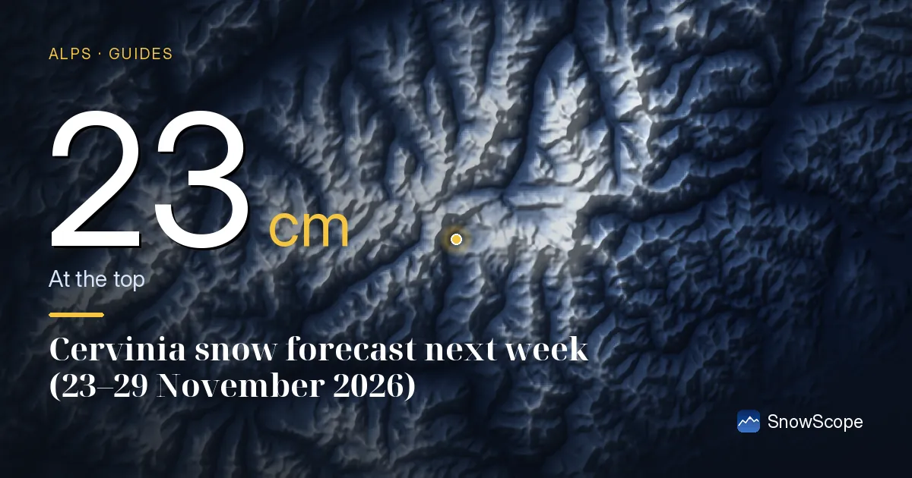

Cervinia snow forecast next week (23–29 November 2026): 23 cm at the top
Next week brings two rounds of snow to Cervinia. The first arrives this week (17–20 November) and stacks 45 cm at the top, leaving a solid base. The second round (23–29 November) adds 23 cm more at 3400 m, with most falling on Wednesday and Thursday.
See the live snow forecast for Cervinia in the SnowScope appSnow depth, powder alerts and the 3D map, free.
The bigger picture: this week sets the stage
Before next week even starts, Cervinia builds depth. Between 17 and 20 November, the upper slopes collect 45 cm (a range of 35–55 cm). That is the foundation. Mid-mountain gathers 36 cm in the same period, and the base holds 21 cm.
Cold air reaches all the way down: at 2100 m, 21 cm of fresh snow is enough to keep it light. By Friday 20 November, the mountain sits deeper than it does today, so next week's second storm falls onto prepared ground.

Next week's snowfall: where and when
The week of 23–29 November adds 23 cm at the top (range 6–41 cm), 21 cm mid-mountain, and 19 cm at the base. The snow concentrates on two days: Wednesday 25 November (4 cm) and Thursday 26 November (10 cm, up to 18). Sunday 29 brings another 4 cm. The other days are mostly quiet.
Height matters less next week than it does this week. The forecast spread between top and base narrows: upper slopes get 23 cm, lower runs 19 cm. That 4 cm difference suggests the air stays cold enough to snow all the way down the valley.
Thursday 26: the best day to be there
Thursday 26 November is when Cervinia's upper mountain sees the heaviest snow: 10 cm in the central forecast, with a high case of 18 cm. The Plateau Rosa and Theodul glacier, shared with Zermatt, face north-west and catch the most. The wide, open slopes there offer the softest turns on a fresh morning.
Lower down, the Valtournenche sector gets less protection from wind and may see the snow settle faster. If the week turns warm, it is the first place to suffer. Ski high early in the week to stay in powder longer.
Will it stick at the village?
Yes. Cervinia's base at 2050 m receives 19 cm for the whole week. That is close to the 23 cm at the top, a sign the air mass stays cold even at lower altitude. The snow will not turn to rain partway down.
Cervinia's runs are long and gentle, dropping from one of the highest summits in the Alps down to 2050 m. That vertical means plenty of terrain stays cold enough to hold powder.
How certain is this forecast?
Low. The range at the top is wide: 6 cm in a low case versus 41 cm in a high case. One scenario brings a decent week; the other leaves skiers disappointed. By midweek (around 23 November), new forecasts will narrow that range.
A forecast made seven to ten days in advance is a trend, not a promise. Use it to plan the week but check again before you book or drive.
Nearby: the region is even
Zermatt (10 km away) forecasts 23 cm at the top next week, Saas-Fee (28 km away) 22 cm, and Verbier (35 km away) 24 cm. The whole region sits within forecast uncertainty. Snow depth will not decide between them; height, slope aspect and which lifts are running will.
The Plateau Rosa and high glaciated terrain across all three resorts will be the safest bet for sustained powder.
Tips for skiers
- Check the regional avalanche bulletin (bollettino valanghe) before leaving the piste in Cervinia.
- Confirm the resort's opening date and lift status: snow forecast does not mean lifts are open this early in the season.
- Watch for the forecast update midweek (around 23 November). The top's range is 6–41 cm; a new run will tell you which side of that you are closer to.
- Ski the Plateau Rosa and Theodul glacier early in the day Thursday 26 or Friday 27, before wind and traffic affect the surface.
- If the week stays cold, lower terrain in the Valtournenche sector stays skiable all week. If mild air arrives, ski higher first.
About these numbers
Resort snow depths are the deepest snow on the resort's upper slopes on the date shown; they are estimates for an area, not a measurement at one point. Forecasts can change. Always read the official avalanche bulletin before going off-piste.
Cite this report
For research, teaching or the press: the numbers and charts are free to reuse under CC BY 4.0 with this citation.
SnowScope (2026), Cervinia snow forecast next week (23–29 November 2026): 23 cm at the top, https://snowscope.app/blog/en/2026/11/cervinia-snow-forecast-next-week-23-29-november-2026.html, accessed 2026-11-16
SnowScope (Atlas Labs). (2026, November 16). Cervinia snow forecast next week (23–29 November 2026): 23 cm at the top. SnowScope snow reports. https://snowscope.app/blog/en/2026/11/cervinia-snow-forecast-next-week-23-29-november-2026.html
BibTeX
@misc{snowscope2026cerviniasnowforecastnext,
author = {{SnowScope (Atlas Labs)}},
title = {Cervinia snow forecast next week (23–29 November 2026): 23 cm at the top},
year = {2026},
month = nov,
howpublished = {\url{https://snowscope.app/blog/en/2026/11/cervinia-snow-forecast-next-week-23-29-november-2026.html}},
note = {Published 2026-11-16 11:48 UTC; accessed 2026-11-16}
}· CC BY 4.0 · Methods, data and tools →
Cervinia: snow and temperature by height, this winter vs last (tools) →
Follow Cervinia
Free: a message when fresh snow is coming, and the forecast every morning.
More snow reports

14 Swiss resorts tracked on 23 November; Zermatt leads with 63 cm depth, 29 cm more forecast by 26 November.

Austria before Christmas: Galtür EUR 258 and Kühtai EUR 269 for 6 days with 30 cm in over 90 % of winters; glaciers cost more, small hills are a gamble.